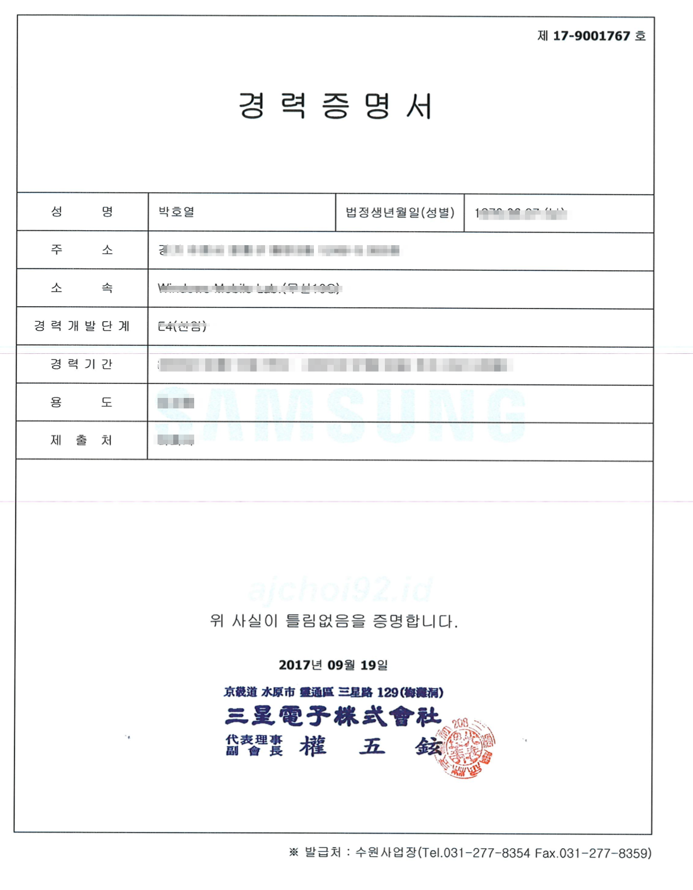
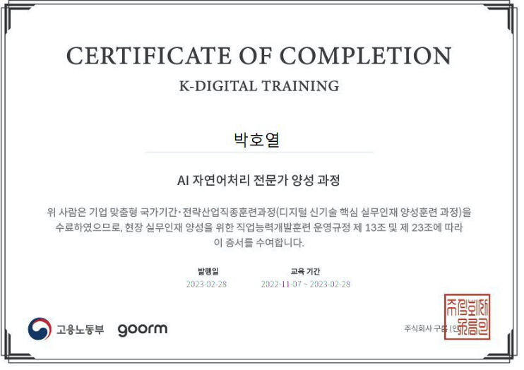
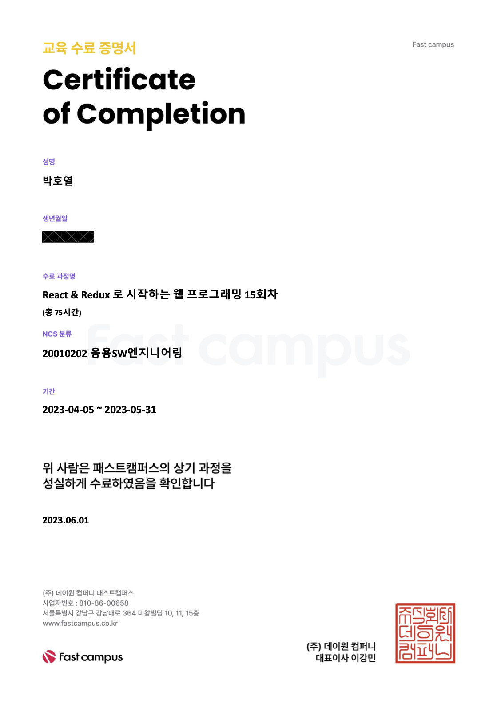

Portfolio
hoyoul park
양해
비밀 서약으로 인해, portfolio에서 보여지는 자료는 제한적입니다.
career path & Projects
Projects는 [ 아래 화살표 ]. Career path는 [ 오른쪽 화살표 ].
(1)기술 blog
영상
사용된 기술 및 참고사항.
- site: https://braindump.frege2godel.me/?stackedPages=%2F
- github: https://github.com/hoyoul/holy-brain
- Emacs Lisp, org mode, css,html,js, d3.js
- description: org mode에서 literate programming을 web까지 확장. backlink의 구현.
(2) web os wayland porting
영상
사용된 기술 및 참고사항.
- c, arm assembly, wayland api, implemented on the vm.
- description: 기존의 x-window의 server & client 방식을 개선한 wayland를 raspberry pi에 porting 성공.
(3) 태양광 monitoring system
영상
사용된 기술 및 참고사항.
- ruby, ruby on rails, css,html,js,chart.js, aws, mariadb
- description: web으로 만든 태양광 monitoring system.
(4) K-water monitoring system
영상
사용된 기술 및 참고사항.
- raspberry pi, iot system. ruby, ruby on rails, css,html,js,chart.js, aws, mariadb
- description: 보여지는 영상은 IOT system 영상. 수압및 오염도를
나타내는 sensor를 라즈베리파이에서 gpio controll로 제어.
이 정보를 db에 저장하고 monitoring system도 만들었음.
(5) webtoon crawler
영상
사용된 기술 및 참고사항.
- nodejs,electron, python으로 만드는 crawler, web scrapy는 ui가 투박해서 electron을 사용했다.
- description: 여기서 눈여겨 볼것은 session cookie의 사용으로 login을 처리한다는 점. 나머지는 일반적인 crawler다. portfolio에 올리긴 그렇지만, 개선해 나가야 할듯하다.
- 개발기간: crawler(1 day)+ ui(1.5 day)
충남대 컴퓨터 공학과
자세한 내용은 아래 화살표.
specification
- 전공: 컴퓨터공학과
- 했던일: computer engineering과 computer science의 course를 들었으며,
재학중에 아르바이트로 APM(Apachie,Php,Mysql)관련 project을 많이 했었습니다.
Unversity of California, Irvine
자세한 내용은 아래 화살표.
증명서류

Figure 1: uci -i20
specification
- 전공: computer science (master 과정)
- 했던일: 1 quarter course work.
- ps: 학비및 생활비 부족으로 UNM으로 이동(리먼 브러더스 사태)
University of New Mexico
자세한 내용은 아래 화살표.
증명서류

Figure 2: unm
specification
- 전공: computer science 석사 (석박사과정 입학)
- 했던일: 석박사 통합과정으로 입학, Terran Lane(현 Google)교수
연구실과 Jed(현 ASU교수) 연구실에서 일함.
machine learning, Network 랩에서 연구. - ps: 석사만 받고 졸업.
삼성전자 무선사업부
자세한 내용은 아래 화살표.
증명서류

Figure 3: 삼성전자.
specification
- 직급: 공채 43기 입사, 선임연구원.
- 했던일: 스마트폰에 들어가는 bsp(board support package)의 gpio control, c언어와 assembly를 사용해서 api작성.
LG전자 CTO(우면동 연구소), 선행 기술 연구소(가산동 연구소)
자세한 내용은 아래 화살표.
증명서류
Figure 4: LG전자.
specification
- 직급: 책임연구원
- 했던일: machine learning과 iot관련(webOS) 논문 research, 특허 작성및
prototype개발. google glass(
AppleGoogle과 smart watch co-work).
대은 (제주도)
자세한 내용은 아래 화살표.
specification
- 직급: 수석 연구원, full-stack 개발자.
- 했던일: 태양광 모니터링 system 개발,
P&C (제주도)
자세한 내용은 아래 화살표.
specification
- 직급: 연구실장, full-stack 개발자
- 했던일: K-water 모니터링 system 개발. IOT와 web monitoring system 개발.
기타
 기타 내용은 아래 화살표.
fast campus

Figure 5: fastcampus
etc
자잘한 알바및 프리랜서 작업 강의등등은 기술하지
않았습니다.
최민석교수(현 경희대),
박찬석교수(한서대)와 reinforcement learning과
machine learning 관련
연구활동을 했습니다.
올해 초에는 bootstrap Kaist
NLP과정을 수강했습니다.
현재 취업준비와 코딩테스트 준비,
side project를 하고 있습니다.
끝
지금까지 봐주셔서 감사합니다.^^